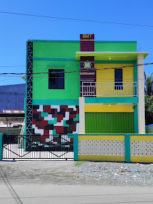

Laporan Keuangan
Laporan Tahunan 2025
Ringkasan laporan keuangan Cabang Bunta — contoh tampilan.
Dokumen akan tersedia
.jpg)
.jpg)
Melayani anggota dan masyarakat melalui layanan keuangan syariah, kebersamaan, dan pendampingan ekonomi umat.
Lihat Laporan CabangDokumen laporan keuangan cabang ditampilkan untuk memberikan informasi yang jelas kepada anggota. Dokumen contoh di bawah perlu diganti dengan laporan resmi yang telah disetujui.
Ringkasan laporan keuangan Cabang Bunta — contoh tampilan.
Dokumen akan tersediaInformasi posisi keuangan dan aktivitas cabang — contoh tampilan.
Dokumen akan tersediaRingkasan perkembangan layanan dan kegiatan cabang — menunggu data resmi.
Data akan diperbaruiDokumentasi kegiatan pelayanan anggota, edukasi, dan program sosial yang dilaksanakan oleh kantor cabang.
Contoh konten kegiatan. Ganti dengan tanggal, uraian, dan dokumentasi kegiatan yang benar.
Contoh konten edukasi anggota. Detail kegiatan menunggu konfirmasi cabang.
Contoh konten program sosial. Isi dengan laporan kegiatan resmi cabang.
Nama berikut hanya contoh untuk memperlihatkan tata letak halaman.
Informasi lokasi dan kontak kantor cabang BMT Al-Muhajirin.
Alamat lengkap:
Bunta, Kabupaten Banggai, Sulawesi Tengah. Detail nama jalan dan nomor bangunan perlu dilengkapi.
Wilayah: Bunta, Kabupaten Banggai, Sulawesi Tengah
Telepon/WhatsApp: 0858 2083 0530 (kontak layanan BMT; nomor khusus cabang perlu dikonfirmasi)
Jam layanan: Senin–Jumat, 08.00–12.00 dan 13.30–16.00 WITA